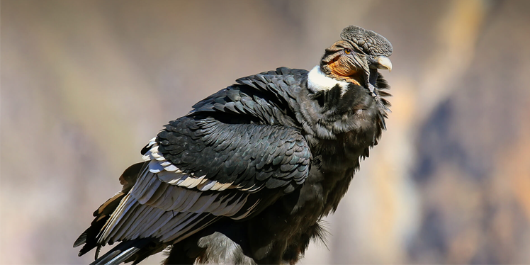

Andean Condor
AKA: Argentinean condor, Bolivian condor, Colombian condor, or Peruvian condor. Scientific Name: Vultur gryphus Family: Cathartidae Species: V. gryphus Speed: 56 km/h in air Length: 100 – 130 cm Mass: Male: 11 – 15 kg Female: 8 – 11 kg Wing Span: 270 – 320 cm Life Span:50 years Location: South America Diet: It is a scavenger, feeding mainly on carrion.
Appearance:
Its color is black with a ruff of white feathers. The head and neck are a dull red color and are nearly featherless. This bird has sharp, hooked bill and large feet with powerful claws.
Facts:
- It is the national bird of Bolivia, Colombia, Ecuador, and Chile.
- It is a part of indigenous Andean religion.
- It does not build nests.